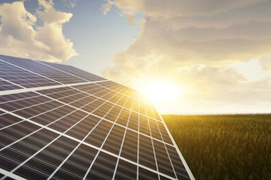
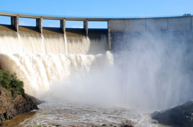
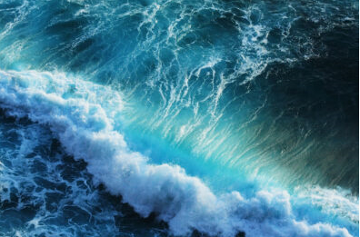
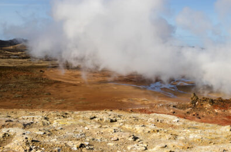

Energía solar
Energía renovable que se utiliza para transformar la energía del Sol en energía eléctrica y térmica. Es la fuente de la vida y da origen a la mayoría de las demás formas de energía existentes en el planeta.

Energía eólica
Es la energía cinética generada por las corrientes de aire y que después es transformada en otras formas de energía aprovechables para la actividad humana.
Energía hidráulica
Es aquella que aprovecha la energía cinética y potencial que poseen las corrientes o saltos de agua.

Energía del mar
Grupo de fuentes de energía que engloban el aprovechamiento de los océanos (mareomotriz, undimotriz, energía maremotérmica o termomarina y la energía azul o potencia osmótica). Generalmente se utilizan para producir electricidad.

Energía geotérmica
Es la que se obtiene del aprovechamiento del calor interno de la Tierra.

Energía de biomasa o bioenergía
Es la que aprovecha residuos orgánicos de origen vegetal o animal obtenidos en procesos naturales o industriales, lo que se conoce como biomasa.